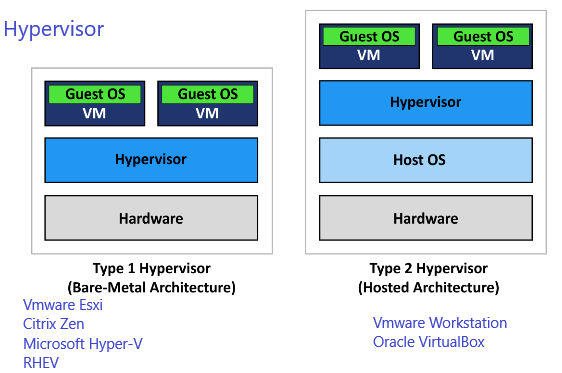

Vmware
Virtualization refers to running multiple operating systems on a computer system simultaneously. It is the process of running a virtual instance of a computer system in a layer abstracted from the actual hardware. To the applications running on top of the virtualized machine, it can appear as if they are on their own dedicated machine. Benefits of using VMware products include better provisioning of applications and resources; simplified data center management; increased efficiency and agility of data center systems.
Hypervisor
Software called a hypervisor connects directly to that hardware and allows you to split system into separate environment. Hypervisor is computer software, firmware or hardware that creates and runs virtual machines. A computer on which a hypervisor runs one or more virtual machines is called a host machine, and each virtual machine is called a guest machine.
There are two types of hypervisor, type-1 and type-2. Type-1 hypervisors are actually a very basic OS on top of which we run virtual machines. Type-2 hypervisor runs on the operating system of the physical host machine, hence they are also called hosted hypervisors.

Exsi hosts
ESXi provides a virtualization layer that abstracts the CPU, storage, memory and networking resources of the physical host into multiple virtual machines. It is based on the VMkernel operating system. ESX runs on bare metal includes its own kernel. ESXi supports up to 4,096 virtual processors per host, 320 logical CPUs per host, 512 virtual machines per host and up 4 TB of RAM per host.
Vmkernel
VMkernel is a POSIX-like operating system developed by VMware. The VMkernel is the liaison between virtual machines (VMs) and the physical hardware that supports them. VMware calls VMkernel a micro kernel because it runs on bare metal, directly on VMware ESX hosts. The VMkernal is responsible for allocating memory, scheduling CPUs and providing other hardware abstraction and operating system (OS) services.
vCenter Server
vCenter Server is the centralized management utility for VMware, and is used to manage virtual machines, multiple ESXi hosts, and all dependent components from a single centralized location. It is built on linux container host Photon OS. vCenter Server allows the use of advanced vSphere features such as vSphere Distributed Resource Scheduler (DRS), vSphere High Availability (HA), vSphere vMotion, and vSphere Storage vMotion.
vSwitch
VMware’s virtual switches are called vSwitches. vSwitches are used for ensuring connections between virtual machines as well as connecting virtual and physical networks. It has three components to provide network connectivity.
a) VM Network
VM Network is Virtual Machine Network also called as VM Port group which is used to connect virtual machines to the Standard Switch. VLAN tag is created for the port group/vm network. You can create multiple port groups on a single vswtich. Each network label must be unique on the host.
b) Management Network
It is the virtual adapter in the ESXi host. VM Kernel Port group requires the IP address. Management Network is responsible for all the management network related to esxi management network, vMotion, iSCSI storage connectivity, Virtual san traffic, NAS or NFS traffic, vSphere Fault Tolerance (FT) etc. VM Kernel Adapter are shown as vmk0,vmk1 etc.
c) Physical Adapter
Physical Adapter is the NIC card of the ESXi host. It is also called the Uplinks. It provides the Network connectivity of virtual machines to the outside physical network without uplinks virtual machine cannot connect to outside physical switch or network. Uplinks are shown as vmnic0, vmnic1 etc.
vNIC is the logical adapter belonging to Virtual Machine Guest Operating System and is internally connected to a vSwitch.
Distributed Resource Scheduler (DRS)
vSphere vMotion
vShphere Storage vMotion
Pratik Gautam pratikgautm@gmail.com